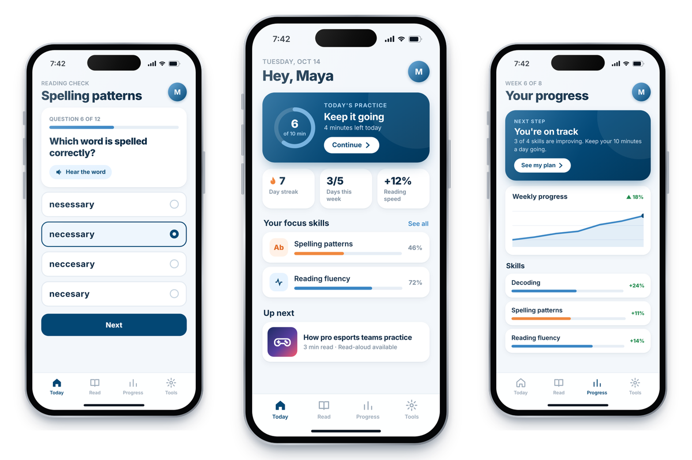
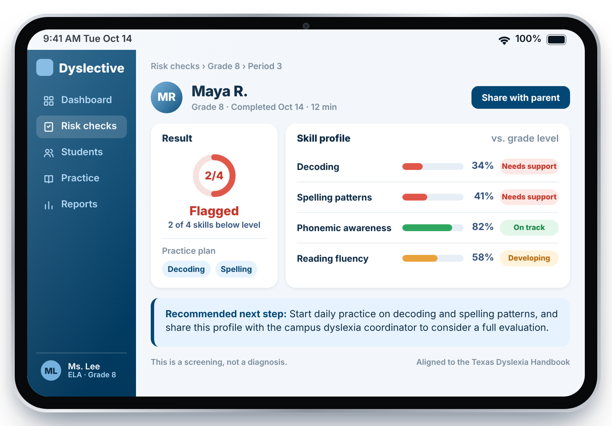
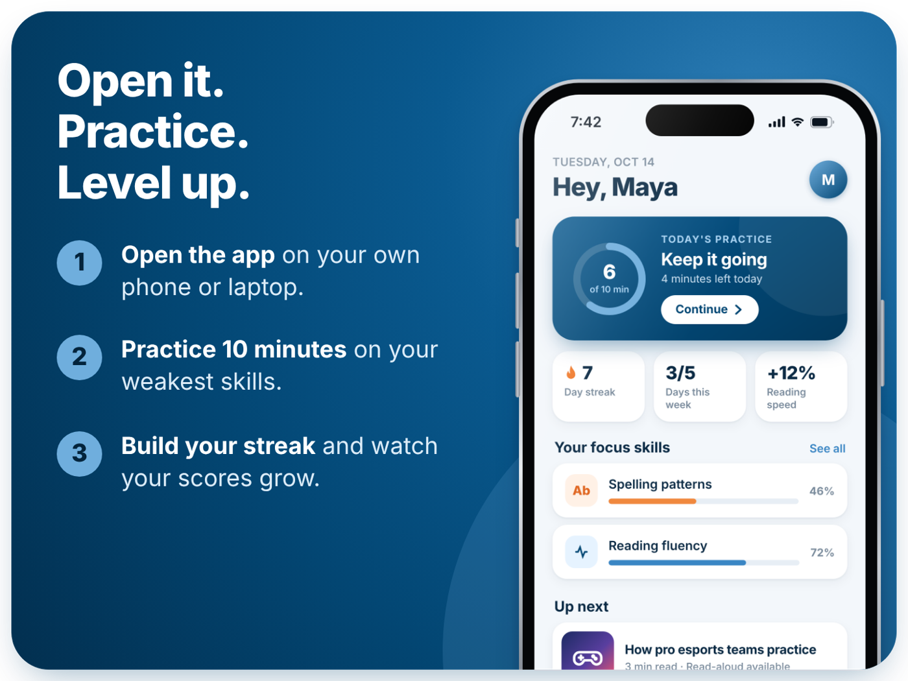
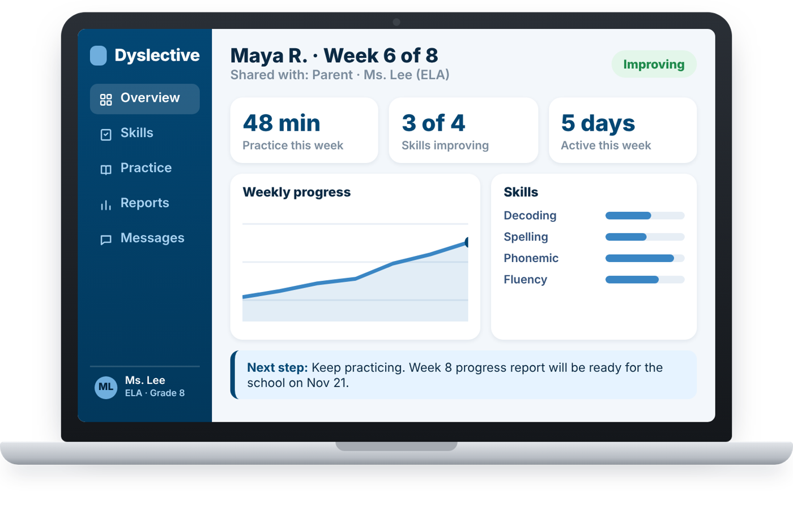

Every student takes a 10–15 minute reading risk check. The ones who are flagged get ten private minutes of practice a day, and their teacher and parent see the same progress.

A student who slips past those two years can reach middle school reading below level with nobody having checked why. By then most of them have learned to hide it.
Because everyone takes it, no student is singled out. Students never see a score or the word "dyslexia." The teacher gets a skill profile for each flagged student and a recommended next step.

The app looks like any study app. Practice targets the two weakest skills, and the reading tools (read aloud, extra spacing, line focus) work on texts from any class.

Both see minutes practiced and how each skill is moving. At week 8 the school gets a progress report. If scores haven't moved, the family is matched with certified dyslexia tutors and can use the report to request a free school evaluation.

Risk check for every student in grades 6–12, with teacher dashboards and reports.
Daily practice for flagged students, bought by the school only for those who need it.
The parent dashboard, progress reports and the evaluation request letter.
A listing for certified dyslexia tutors and therapists. Paying never changes who a family is shown.
The demo walks through one student's eight weeks in about two minutes.
Try the demo